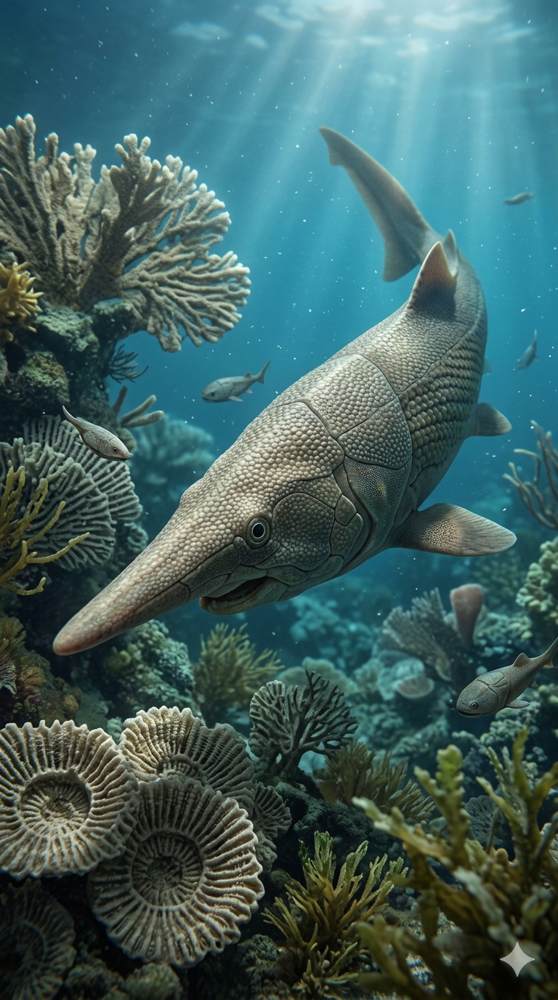
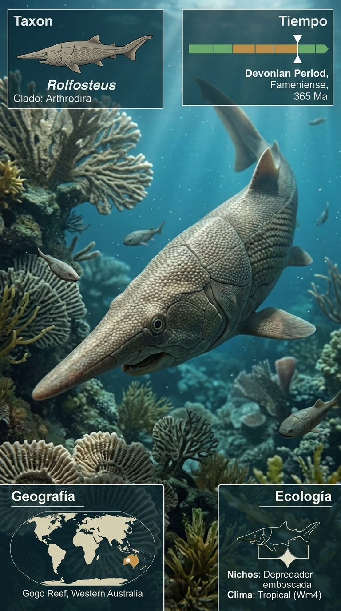
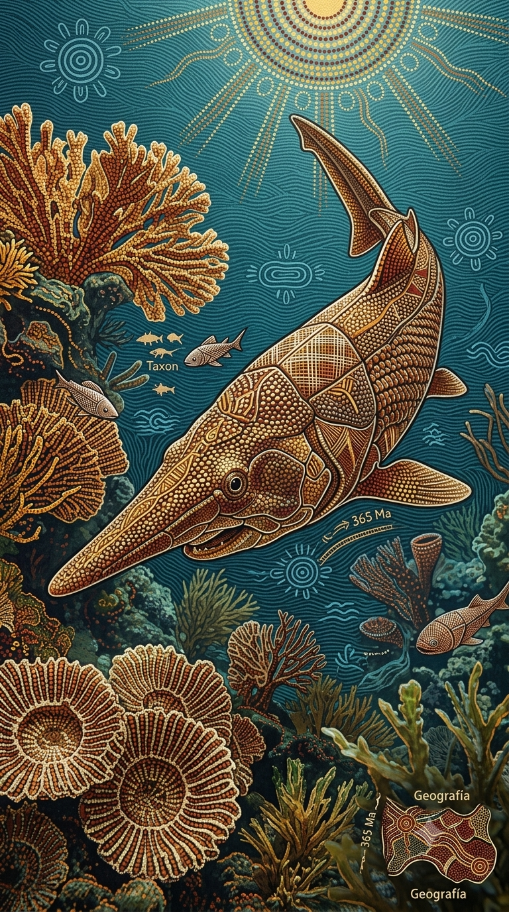
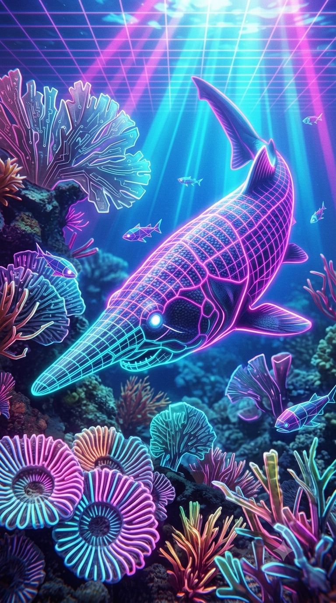

Paleoficha de Rolfosteus




Periodo: Devónico Superior (Frasniense)
Edad: Hace aproximadamente 380 millones de años.
Dieta: Piscívoro.
Distribución: Formación Gogo, Australia Occidental.
TAXÓN:
Rolfosteus canningensis
CLADO:
Placodermi (Orden Arthrodira)
DIETA:
Piscívoro especializado en la captura de peces y pequeñas presas.
TAMAÑO:
Entre 15 y 20 cm de longitud.
LOCOMOCIÓN:
Natación activa mediante un cuerpo hidrodinámico protegido por una armadura craneal articulada.
TIEMPO:
Devónico Superior (Frasniense), hace aproximadamente 380 millones de años.
GEOGRAFÍA:
Formación Gogo, Australia Occidental (Gondwana).
EQUIVALENCIA PALEOGEOGRÁFICA:
Sistema arrecifal tropical desarrollado sobre mares cálidos y poco profundos.
AMBIENTE PALEAOECOLÓGICO:
Arrecifes dominados por estromatopóridos y corales rugosos con una biodiversidad excepcional.
ECOLOGÍA:
• Flora: Fitoplancton abundante y algas adheridas a los arrecifes.
• Fauna secundaria: Placodermos, sarcopterigios y ammonoideos primitivos de la Biota de Gogo.
• Nicho: Depredador especializado con un hocico extremadamente alargado, probablemente adaptado para capturar presas ocultas entre las grietas del arrecife mediante succión.
• Relaciones: Consumidor de nivel trófico medio y presa potencial de grandes placodermos depredadores.
CLIMA:
Wm10 (Marino tropical). Aguas cálidas, estables y muy oxigenadas.
ESTADO ECOLÓGICO:
Estable. Rolfosteus representa una de las morfologías más singulares entre los placodermos artrodiros, reflejando la extraordinaria diversificación de los vertebrados del Devónico.
Vídeo PalEntropía:
▶ Ver Short en YouTube